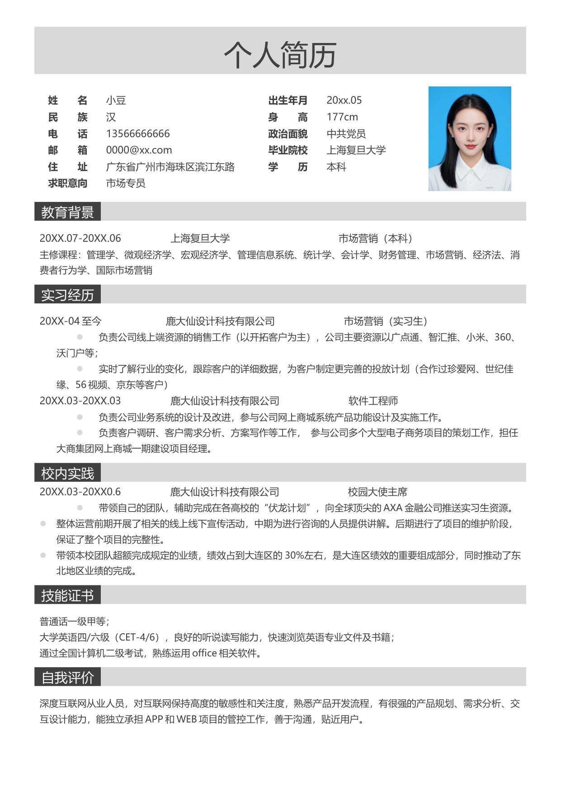

个人简历
姓 名
小豆
出生年月
20xx.05
民 族
汉
身 高
177cm
电 话
13500000000
政治面貌
中共党员
邮 箱
0000@xx.com
毕业院校
上海复旦大学
住 址
广东省广州市海珠区滨江东路
学 历
本科
求职意向
市场专员
教育背景
20XX.07-20XX.06 上海复旦大学 市场营销（本科）
主修课程：管理学、微观经济学、宏观经济学、管理信息系统、统计学、会计学、财务管理、市场营销、经济法、消
费者行为学、国际市场营销
实习经历
20XX-04 至今 鹿大仙设计科技有限公司 市场营销（实习生）
•
负责公司线上端资源的销售工作（以开拓客户为主），公司主要资源以广点通、智汇推、小米、360、
沃门户等；
•
实时了解行业的变化，跟踪客户的详细数据，为客户制定更完善的投放计划（合作过珍爱网、世纪佳
缘、56 视频、京东等客户）
20XX.03-20XX.03 鹿大仙设计科技有限公司 软件工程师
•
负责公司业务系统的设计及改进，参与公司网上商城系统产品功能设计及实施工作。
•
负责客户调研、客户需求分析、方案写作等工作， 参与公司多个大型电子商务项目的策划工作，担任
大商集团网上商城一期建设项目经理。
校内实践
20XX.03-20XX0.6 鹿大仙设计科技有限公司 校园大使主席
•
带领自己的团队，辅助完成在各高校的“伏龙计划”，向全球顶尖的AXA 金融公司推送实习生资源。
•
整体运营前期开展了相关的线上线下宣传活动，中期为进行咨询的人员提供讲解。后期进行了项目的维护阶段，
保证了整个项目的完整性。
•
带领本校团队超额完成规定的业绩，绩效占到大连区的30%左右，是大连区绩效的重要组成部分，同时推动了东
北地区业绩的完成。
技能证书
普通话一级甲等；
大学英语四/六级（CET-4/6），良好的听说读写能力，快速浏览英语专业文件及书籍；
通过全国计算机二级考试，熟练运用office 相关软件。
自我评价
深度互联网从业人员，对互联网保持高度的敏感性和关注度，熟悉产品开发流程，有很强的产品规划、需求分析、交
互设计能力，能独立承担APP 和WEB 项目的管控工作，善于沟通，贴近用户。